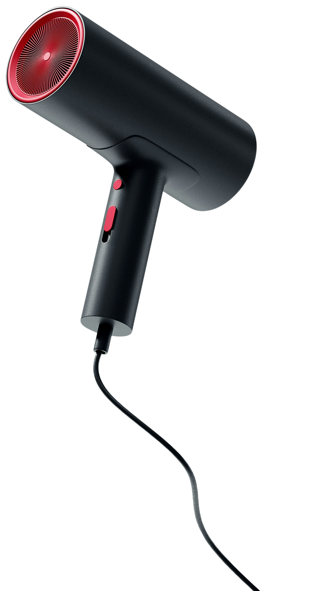

Модель
Whoosh
Лёгкий, мощный и минималистичный — Whoosh создан для тех, кто ценит форму и функциональность. Благодаря инновационной турбинной технологии и продуманной эргономике, он быстро сушит волосы, придавая им естественный объём и блеск.
